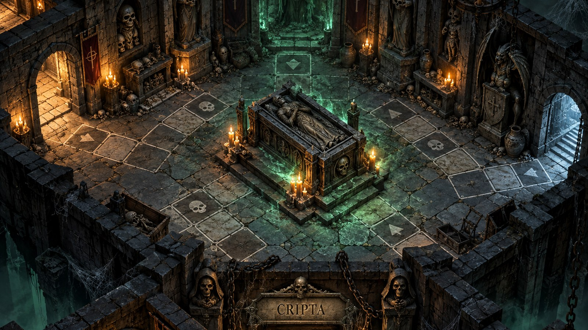
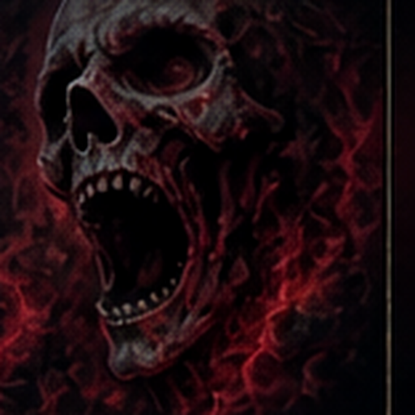

MISSIONE
Sigilla la Cripta e riduci il Teschio a un osso comune.
Durante la partita questa pagina è solo un riepilogo: il gioco vero avviene nella Stanza. Minimizzala quando vuoi consultare il diario completo.
RISVEGLIO DEL TESCHIO
0 / 12💀
La campana suona a ogni cambio di stanza.
💀
Teschio dormienteLa Cripta è ancora il suo carcere.
IL DADO DEL MANIERO
1 Avanza 1
2 Avanza 2
3 Avanza 3
4 Avanza 4
5 Avanza 5

👻 / ⚠️ casuale⛓️ Un blocco dura al massimo 2 turni personali. Un Imprevisto favorevole può liberarti prima; al secondo turno il personaggio si libera comunque.